1.1 Science of Geology and Its Branches
Geology (derived from Greek Geo = Earth, Logos = Discourse/Study) is the branch of natural science that investigates the Earth's origin, history, composition, internal architecture, dynamic surface modifications, and life evolution preserved in rock records.
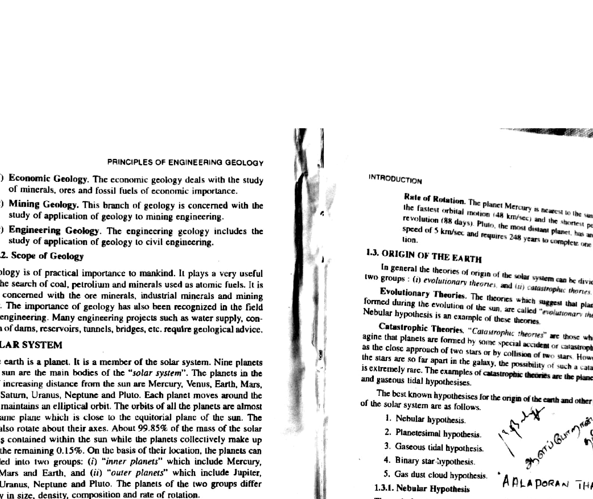
For civil and mining engineers, geology forms the essential foundation upon which tunnels, dams, reservoirs, highways, slopes, and foundations are designed. The major branches include:
- Physical Geology: Investigates the geomorphic processes (wind, rivers, glaciers, seas, groundwater, volcanism, earthquakes) altering the Earth's relief.
- Mineralogy: The scientific study of naturally occurring inorganic crystalline substances, their crystal symmetry, chemical bonding, and diagnostic physical properties.
- Petrology: The study of rocks—their origin, mineral constituents, texture, structure, and classification (Igneous, Sedimentary, Metamorphic).
- Structural Geology: Deals with the architecture of rocks, deformation mechanisms, stress-strain relations, and rock fractures such as folds, faults, joints, and unconformities.
- Stratigraphy: Chronological ordering and correlation of stratified sedimentary strata to reconstruct historical geological events and paleogeography.
- Engineering Geology: The application of geological knowledge and geomechanical testing to engineering design, ensuring structural safety against catastrophic ground failure.
1.2 Origin and Age of the Earth
Various cosmogonic hypotheses explain the origin of our solar system and Earth:

- Nebular Hypothesis (Kant & Laplace): Postulated that a primordial rotating hot gaseous nebula contracted under gravitation. Rapid rotation led to centrifugal flattening, shedding concentric rings that condensed into orbiting planets around the central Sun.
- Planetesimal Hypothesis (Chamberlin & Moulton): A passing massive star exerted intense tidal attraction on the early Sun, drawing out bolts of solar matter that cooled into millions of solid particles called planetesimals, which aggregated through accretion into planets.
- Gaseous Tidal Hypothesis (Jeans & Jeffreys): A passing star produced a cigar-shaped gaseous filament drawn from the Sun, which ruptured and condensed into planetary spheres with the largest planets (Jupiter, Saturn) in the central bulge.
Quantitative Age Determination of the Earth
Early physical methods based on ocean salinity (Joly) or sedimentation accumulation rates provided rough minimum estimates. Modern precision geochronology utilizes radiometric decay of unstable parent isotopes ($P$) into radiogenic daughter isotopes ($D$):
- Potassium-Argon (${}^{40} ext{K} o {}^{40} ext{Ar}$): Half-life $T_{1/2} = 1.25 imes 10^9$ years. Widely used for dating igneous rocks and volcanic tephra.
- Uranium-Lead (${}^{238} ext{U} o {}^{206} ext{Pb}$, ${}^{235} ext{U} o {}^{207} ext{Pb}$): Concordia-Discordia zircon geochronology establishes the Earth's age at $4.54 \pm 0.05 ext{ billion years}$.
- Rubidium-Strontium (${}^{87} ext{Rb} o {}^{87} ext{Sr}$): Isochron methodology resolving deep Precambrian cratonic metamorphic ages.
- Radiocarbon (${}^{14} ext{C}$): Half-life $5,730 ext{ years}$. Used for dating late Quaternary sediments, peat, and Holocene geoengineering sites.
1.3 Internal Constitution of the Earth
Seismic wave velocities ($V_p$ and $V_s$) recorded from deep earthquakes reveal that the Earth consists of three concentric compositional shells separated by first-order seismic discontinuities:
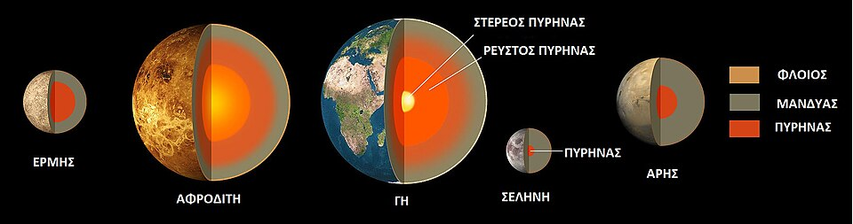
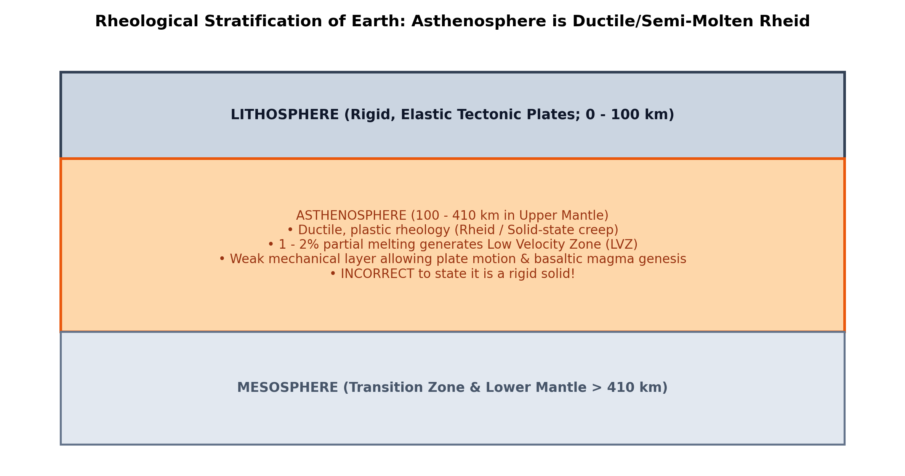

- Crust: The outermost solid brittle skin. Continental crust (average thickness 35–40 km, up to 70 km under mountains) consists predominantly of granitic/felsic rocks rich in Silica and Alumina (SIAL, density $\approx 2.7 ext{ g/cm}^3$). Oceanic crust (5–7 km thick) consists of dense basaltic/gabbroic rocks rich in Silica and Magnesia (SIMA, density $\approx 3.0 ext{ g/cm}^3$).
- Mohorovičić Discontinuity (Moho): Marks the sharp boundary between the crust and mantle, where $P$-wave velocity abruptly jumps from $\sim 6.5 ext{ km/s}$ to $\sim 8.1 ext{ km/s}$.
- Mantle: Extends to a depth of $2,900 ext{ km}$. Composed of dense ultramafic peridotite. The upper mantle contains the Asthenosphere ($100 ext{--}250 ext{ km}$ depth), a mechanically weak, plastic, low-velocity zone (LVZ) upon which rigid lithospheric plates glide.
- Gutenberg Discontinuity: Occurs at $2,900 ext{ km}$ depth, separating the solid mantle from the outer core. P-wave velocity drops sharply from $13.7 ext{ km/s}$ to $8.1 ext{ km/s}$, and $S$-waves cease completely, proving the outer core is liquid.
- Core (Barysphere / NIFE): Extends from $2,900 ext{ km}$ to the Earth's center ($6,371 ext{ km}$). Composed of Iron and Nickel alloy. The Outer Core is liquid ($2,900 ext{--}5,150 ext{ km}$), generating Earth's geomagnetic dynamo; the Inner Core ($5,150 ext{--}6,371 ext{ km}$) is solid iron due to extreme pressures exceeding $3.6 ext{ Mbar}$.
1.4 Isostasy: Pratt vs. Airy Hypotheses
Isostasy (Dutton, 1889) is the state of mechanical gravitational equilibrium between the Earth's crustal topography and the denser underlying mantle. Two classical models explain isostatic compensation:


| Parameter | Pratt's Hypothesis (1859) | Airy's Hypothesis (1855) |
|---|---|---|
| Crustal Density | Variable: High mountains have lower density; ocean basins have higher density ($\rho \cdot h = ext{const}$). | Uniform: All crustal blocks have equal density ($\rho_c \approx 2.67 ext{ g/cm}^3$). |
| Depth of Compensation | Uniform level of compensation at a constant depth ($D \approx 100 ext{ km}$). | Variable: Mountains possess deep roots projecting into the denser mantle like icebergs ($t = \frac{h \rho_c}{\rho_m - \rho_c}$). |
| Geological Reality | Applies partially to mid-ocean ridges and volcanic plateaus. | Dominates continental mountain belts (Himalayas, Alps possess 65-70 km deep crustal roots). |
1.5 Continental Drift and Plate Tectonics
Alfred Wegener (1912) proposed that all continents were formerly conjoined into a supercontinent, Pangaea, surrounded by the universal ocean Panthalassa. Pangaea fragmented during the Mesozoic into northern Laurasia and southern Gondwanaland, separated by the east-west Tethys Sea.
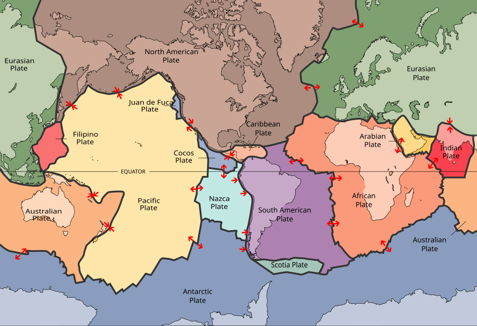
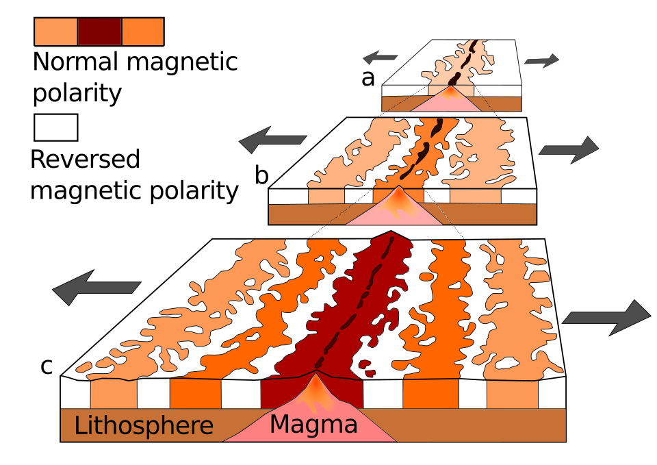
- Jigsaw Coastal Fit: Continental margin matching across the Atlantic (South America and Africa).
- Paleontological Flora & Fauna: Distribution of Glossopteris and Gangamopteris seed ferns, and reptiles (Mesosaurus, Lystrosaurus) across India, South Africa, Antarctica, South America, and Australia.
- Permo-Carboniferous Glaciation: Striated pavements and glacial tillites (Talchir Boulder Bed in India, Dwyka tillite in South Africa) indicating a common polar ice sheet.

The Modern Plate Tectonic Paradigm
The lithosphere is divided into major rigid plates (Pacific, North American, South American, Eurasian, African, Indo-Australian, Antarctic) moving atop the asthenosphere driven by mantle convection, slab pull, and ridge push:
- Divergent Margins (Constructive): Plates move apart along Mid-Oceanic Ridges (e.g., Mid-Atlantic Ridge), creating new basaltic oceanic crust via sea-floor spreading (Hess, 1962).
- Convergent Margins (Destructive): Plates collide. Ocean-Continent or Ocean-Ocean subduction produces deep trenches, volcanic island arcs, and Wadati-Benioff seismic zones. Continent-Continent collision (e.g., India colliding with Eurasia) produces orogenic belts like the Himalayas.
- Transform Faults (Conservative): Plates slide horizontally past one another without crustal creation or consumption (e.g., San Andreas Fault).
1.6 Visual Atlas: Earth Interior, Seismology & Plate Tectonics
Comprehensive visual gallery comparing textbook diagrams, PREM seismic velocity profiles, Suess geochemical layers (SIAL, SIMA, NIFE), and global tectonic maps.

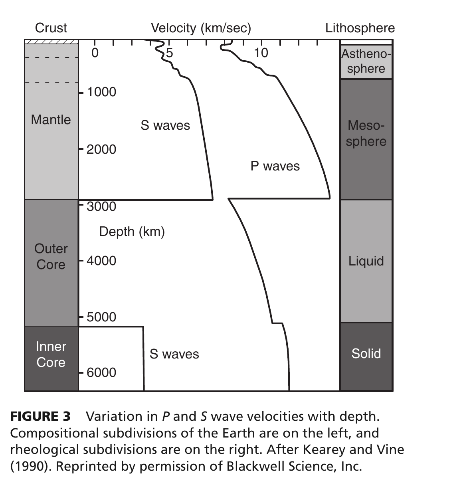
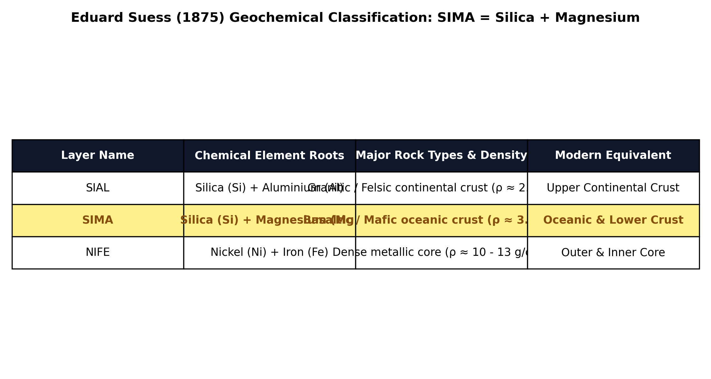
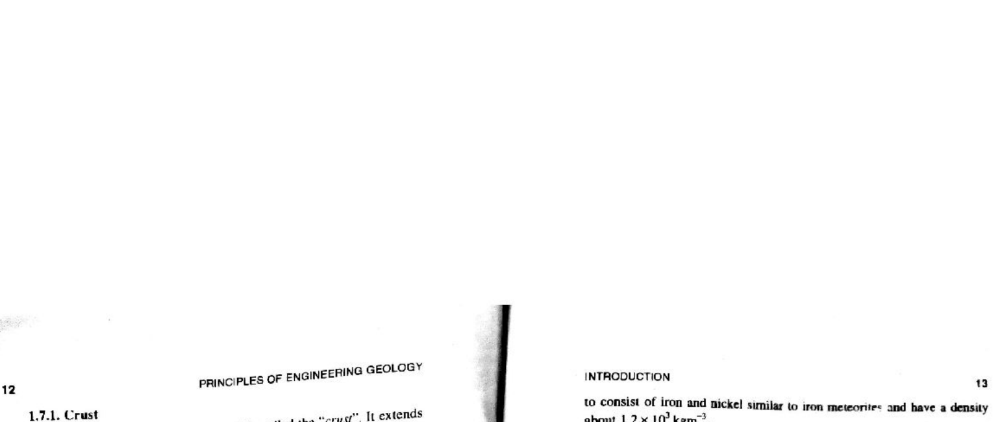

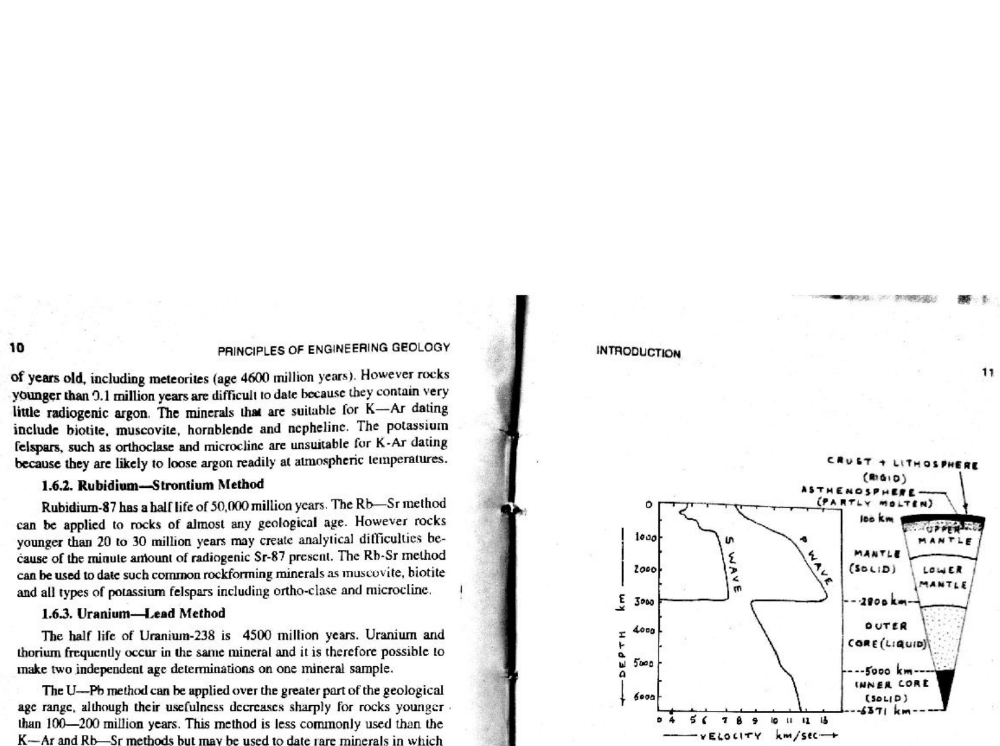

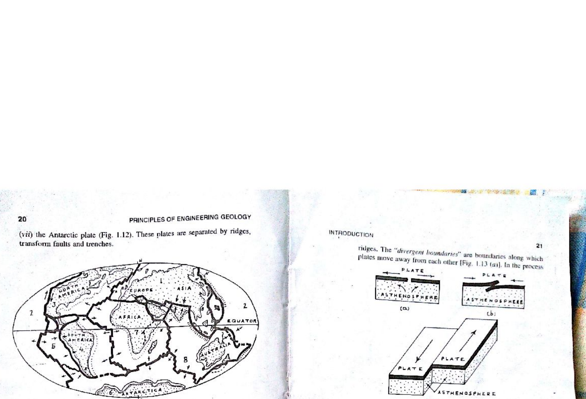

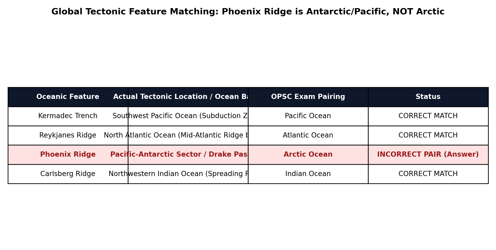
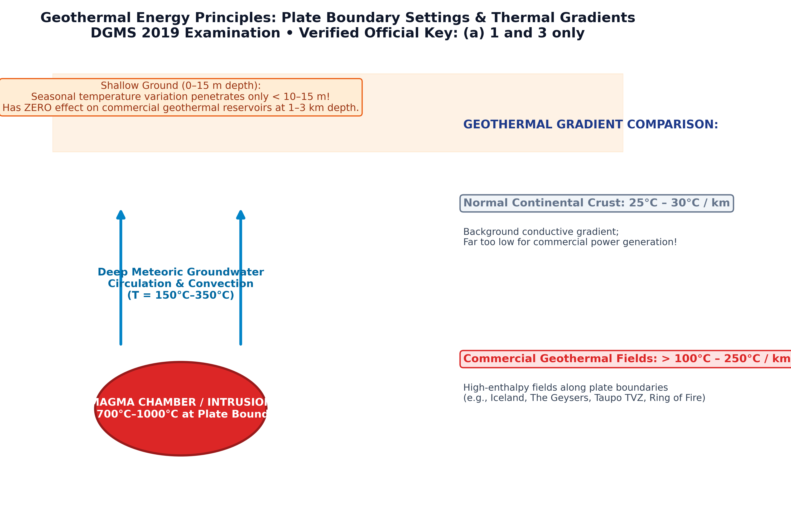
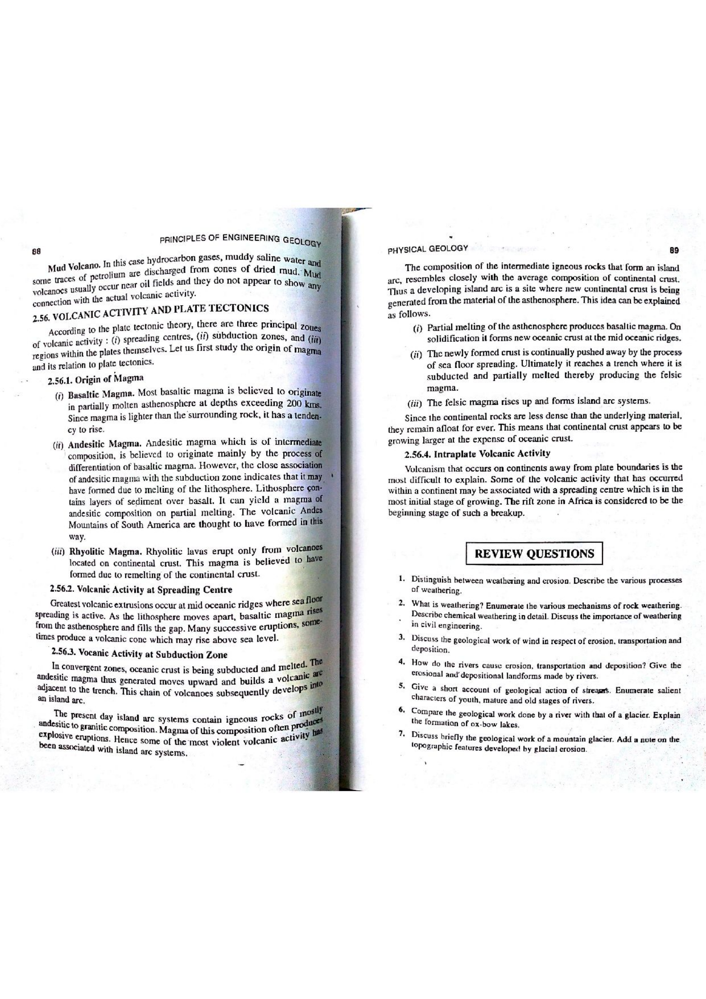